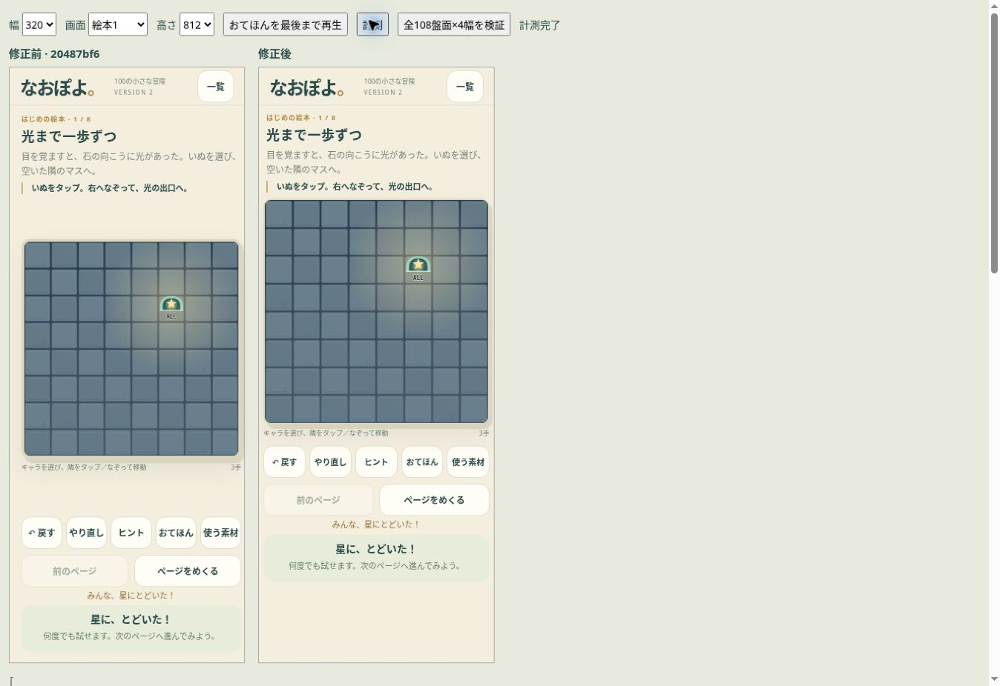
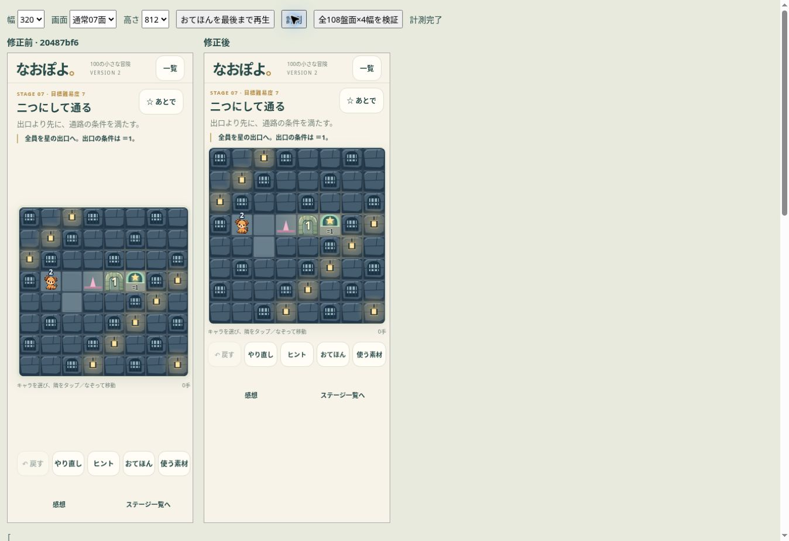
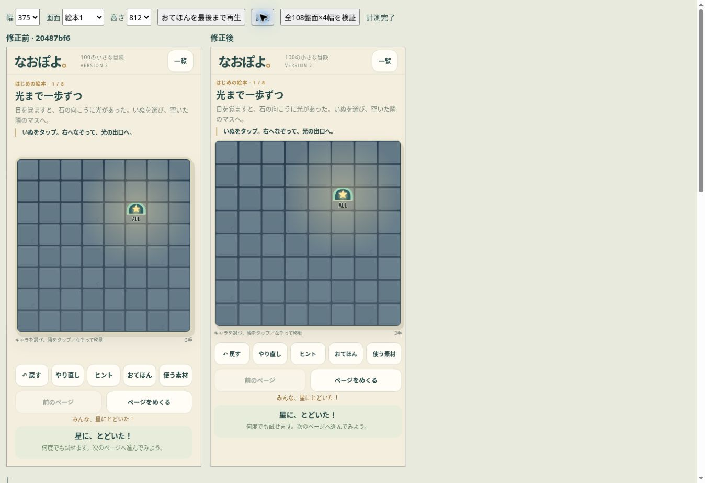
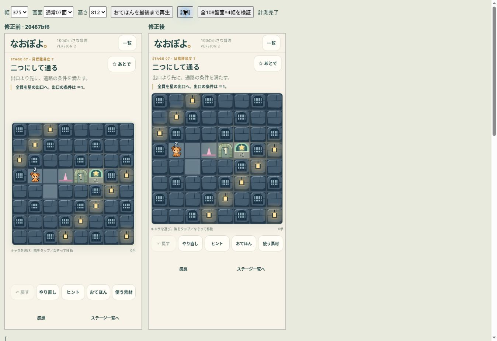
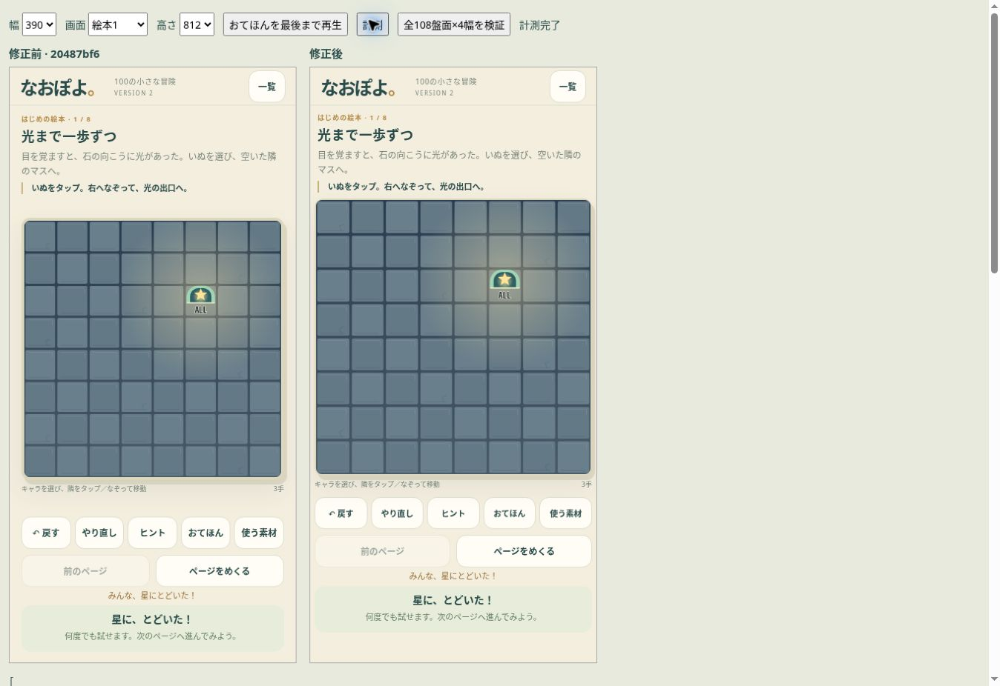
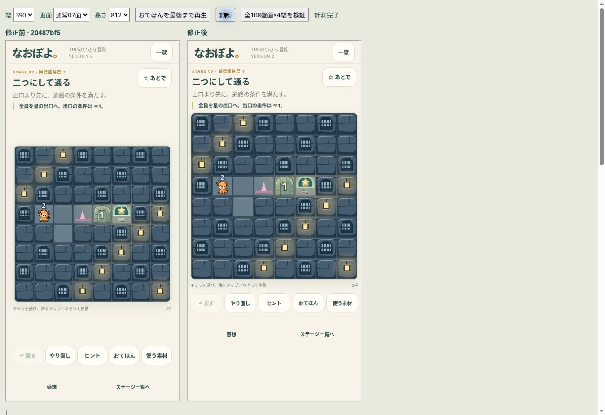
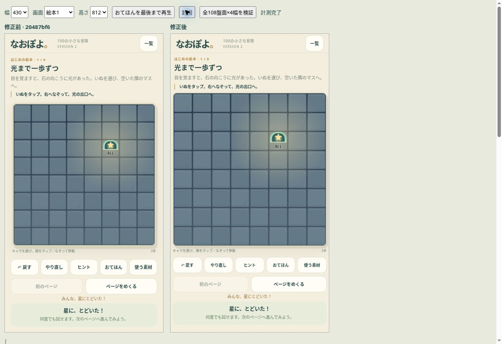
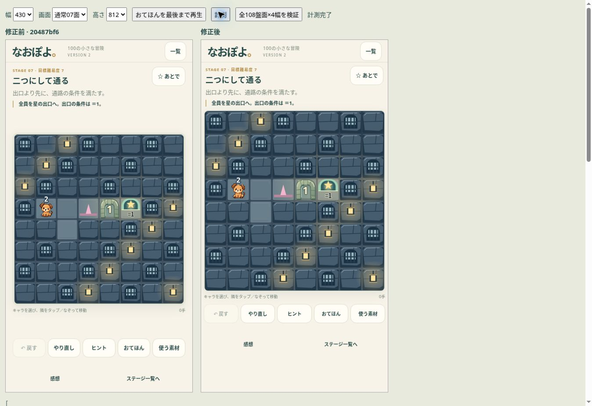

左が修正前（20487bf6）、右が修正後。絵本は実際にドラッグしてクリアした状態、通常面は07面です。Chromeの画面幅による比較で、iPhone Safari実機の撮影ではありません。
盤面は画面の幅を優先し、説明・ヒント・クリア表示は別の領域へ。高さが足りない場合はページを縦にスクロールできます。








全108盤面×4幅＝432ケースでヒント・お手本表示前後の盤面幅が一致。物理エンジン・ステージ内容・キャラクター・アーチの0.28秒アニメーションは変更していません。